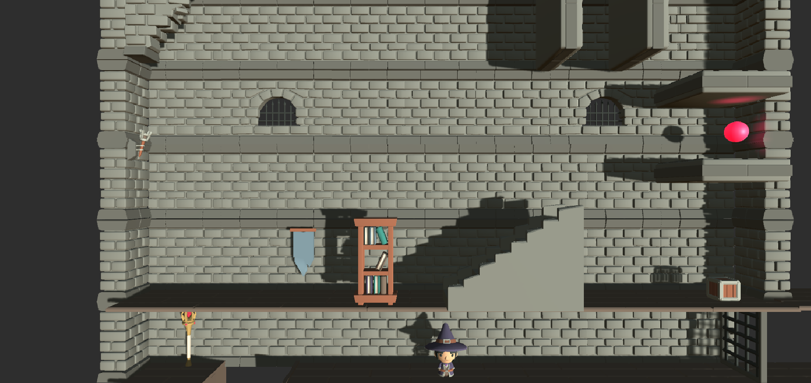

Mis proyectos

Vídeos de placas solares grabados y editados

Juego en 2.5D desarrollado con Unity
Mi nombre es Pablo Pitarch. Soy estudiante de ingeniería de software en la Universidad Jaume I. Dentro de la programación, tengo especial interés por el desarrollo frontend.
Estuve un semestre de intercambio en Seúl, Corea del Sur. Fue una experiencia increíble que me aportó muchos conocimientos que no habría adquirido si me hubiese quedado.
Además de mi pasión por la programación, estoy muy interesado en la fotografía y los deportes. Tengo un dron!
Programo tanto en funcional como POO: Python, JavaScript, Java, TypeScript.
Me encanta hacer fotos y videos siempre que voy de viaje para después hacer un álbum o un vídeo entretenido.
Tengo gran experiencia con este software de gestión de proyectos.
Estoy a punto de terminar el grado de Ingeniería Informática en la Universidad Jaume I.
Trabajé de monitor de tenis en Ripotenis.
Vídeos de placas solares grabados y editados
Juego en 2.5D desarrollado con Unity